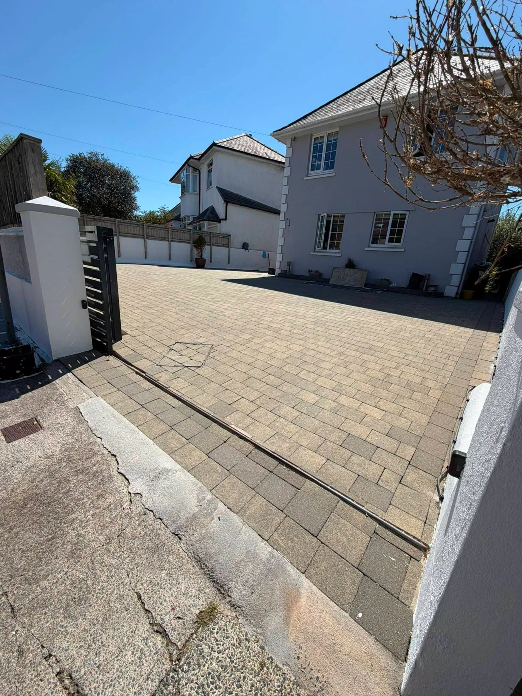
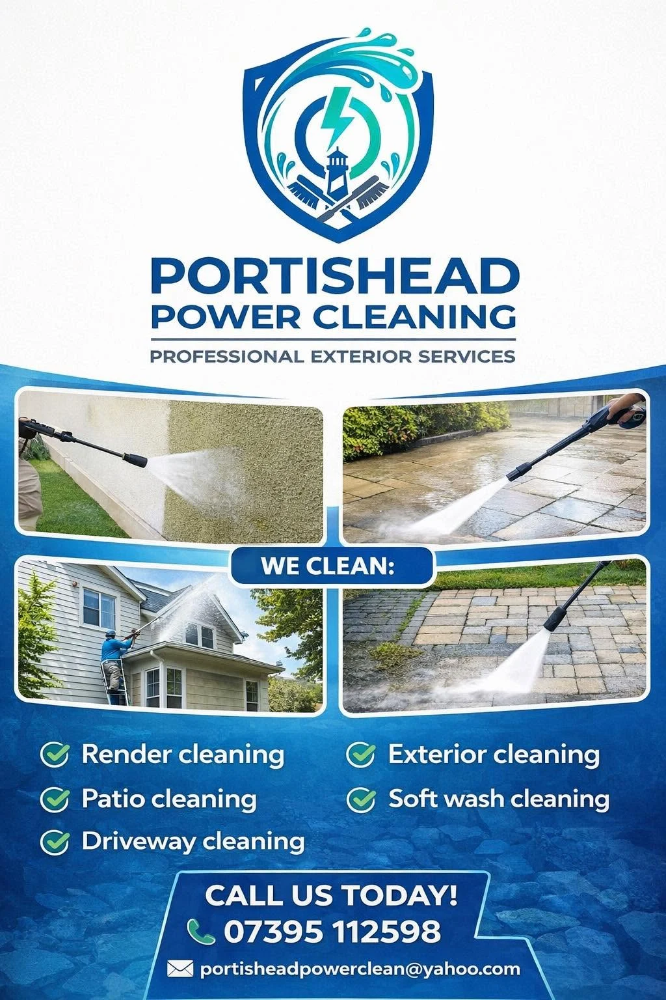

PORTISHEAD · PROFESSIONAL EXTERIOR SERVICES
Wash away the grime.
Welcome back the colour.
Driveways, patios and exterior walls. Professional cleaning to lift dirt, moss and stains and refresh the outside of your home.
Driveway & patio cleaningRender & soft washingBased in Portishead
CLEANER SURFACES. A FRESHER HOME.
Rediscover what’s
under the weathering.
Everyday use and the elements leave their mark on outdoor surfaces. A build-up of dirt and organic growth can dull paving, disguise its colour and leave exterior walls looking tired.
Portishead Power Cleaning provides driveway, patio, render, soft wash and exterior cleaning. Start with a photograph and a conversation about the right approach for your property.
Talk to us about your clean →

RESULTS YOU CAN SEE
From weathered
to welcoming.
Colour returns to block paving. Staining lifts from render. The difference shows in the details — from the front steps to the garden patio.
These before-and-after photographs show Portishead Power Cleaning’s work on outdoor surfaces.
Explore the transformations →EXTERIOR CLEANING SERVICES
A cleaner finish,
from the ground up.
Choose the area you want to refresh and see how we can help.
Driveway cleaning
Pressure washing for block-paved driveways, helping lift built-up dirt, moss and surface staining.
Explore this service →Patio & path cleaning
Patio, paving and path cleaning for the outdoor spaces you use every day.
Explore this service →Render cleaning
Exterior render cleaning to tackle visible dirt and organic staining.
Explore this service →Soft wash & exterior cleaning
Soft wash and exterior cleaning enquiries for walls and other exterior surfaces.
Explore this service →THE DIFFERENCE IS IN THE CLEAN
Real surfaces.
Visible results.
Driveways, patios, paths and walls. Tap a photograph to see the full before-and-after image.

PORTISHEAD POWER CLEANING
Professional care
for your exterior.
Based in Portishead, North Somerset, we help refresh the surfaces around your home with exterior cleaning tailored to the job.
01
Start with your surface
Tell us what it is made from and what you would like cleaned.
02
Share the details
Photographs, your postcode and access information help us understand the work.
03
Choose the right approach
Discuss a cleaning method suited to the material and its condition.
BASED IN PORTISHEAD
Local exterior cleaning.
Portishead, North Somerset. Send your postcode to check availability for your property.
DrivewaysPatios & pathsRenderExterior wallsSoft wash cleaning
BEFORE YOUR CLEAN
A few useful answers.
What surfaces do you clean?
Our services include driveways, patios, paths, render and exterior surfaces, plus soft wash cleaning. Send a photograph so we can discuss your particular surface.
Is pressure washing suitable for every surface?
No. The material, its condition and the type of staining all matter. Render and more delicate finishes may need a different approach from hard paving.
What should I send for a quote?
Your postcode, clear photographs, an approximate size and any information about access. Mention the marks or areas you particularly want addressed.
Can you clean properties outside Portishead?
Send your postcode and the work you have in mind to check availability.
Does this form send my enquiry automatically?
It prepares a WhatsApp message for you to review. You can add photographs and send it yourself in WhatsApp.
LET’S CLEAN THINGS UP
Show us the surface.
Tell us your plans.
Send your postcode, a few photographs and the areas you would like cleaned. We can discuss the surface, access and what is involved.
Prefer email?
portisheadpowerclean@yahoo.com
PORTISHEAD POWER CLEANING
A fresher finish.
A better first impression.
Tell us what you would like cleaned.